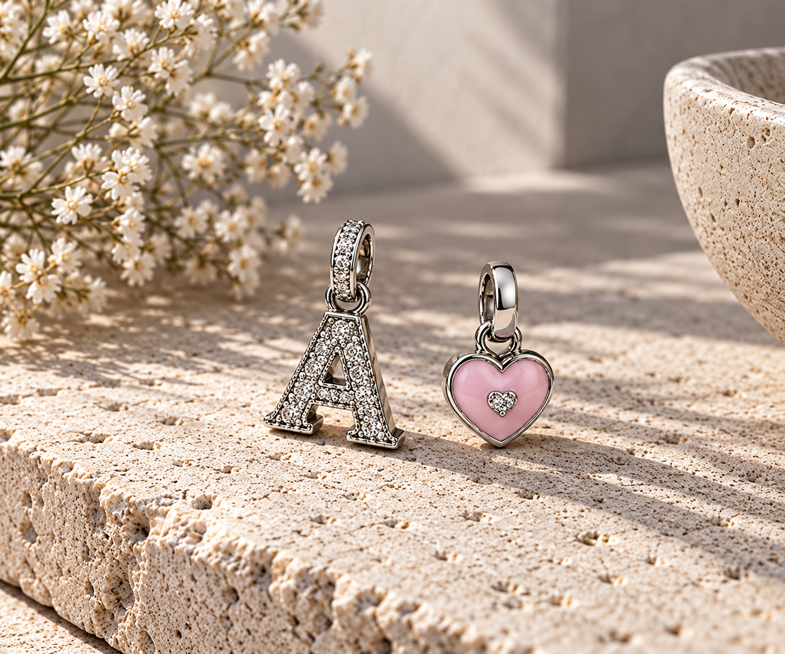
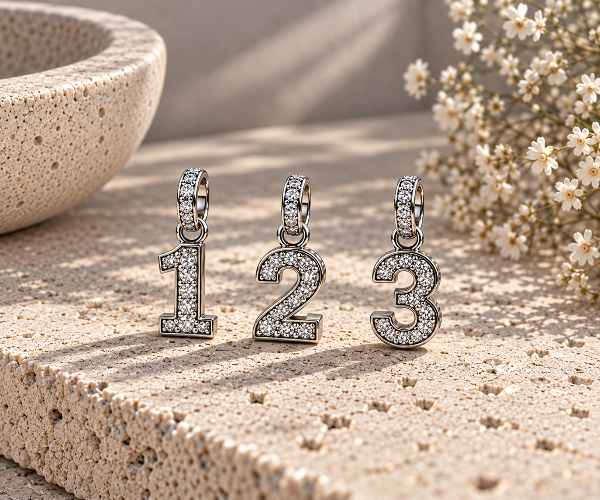
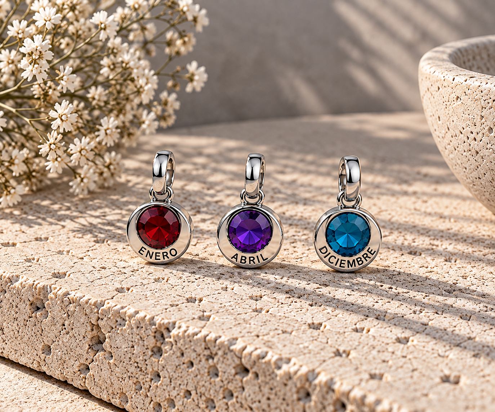
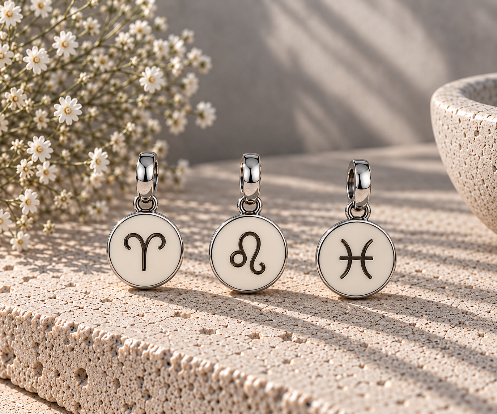
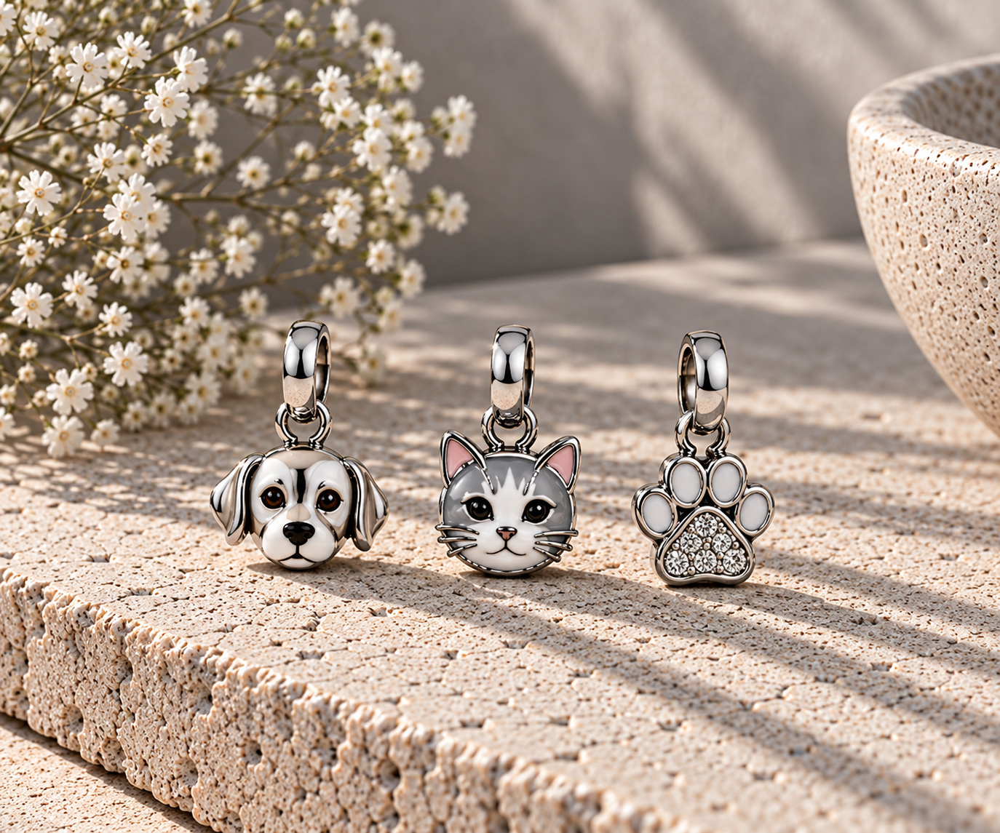
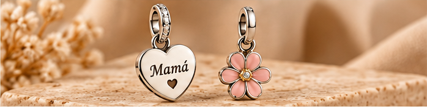
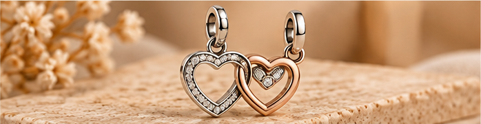
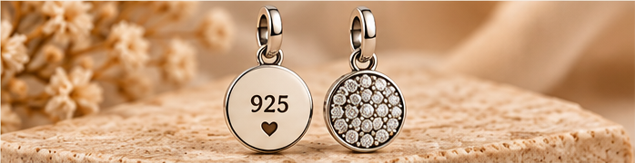
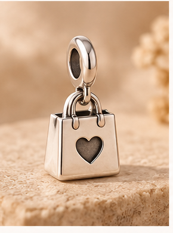
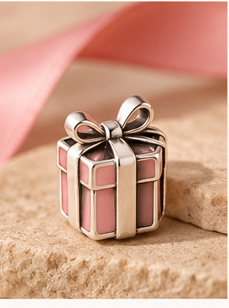

Charms de letras e iniciales
Descubre charms con letras e iniciales para personalizar tu pulsera y llevar contigo un nombre, una inicial o un recuerdo especial.
Ver charms de letras e inicialesDescubre diferentes tipos de charms para pulseras y encuentra fácilmente la categoría que estás buscando. Desde letras e iniciales hasta animales, meses, números, horóscopo, plata 925 y mucho más.

Descubre charms con letras e iniciales para personalizar tu pulsera y llevar contigo un nombre, una inicial o un recuerdo especial.
Ver charms de letras e iniciales
Encuentra charms con números para representar fechas, edades, aniversarios o cualquier número que tenga un significado especial para ti.
Ver charms de números
Descubre charms relacionados con los meses del año para representar cumpleaños, fechas especiales y momentos importantes.
Ver charms de meses
Encuentra charms inspirados en los signos del zodiaco y lleva contigo un diseño relacionado con tu signo o el de alguien especial.
Ver charms del horóscopo
Descubre charms de perros, gatos y otros animales para llevar contigo el recuerdo de tu mascota o representar ese animal tan especial para ti.
Ver charms de animales
Encuentra charms especiales para mamá y descubre diseños pensados para expresar cariño, agradecimiento y momentos compartidos.
Ver charms para mamá
Descubre charms para pareja que representan el amor, los recuerdos compartidos, aniversarios y otros momentos especiales.
Ver charms para pareja
Descubre charms de plata 925 con diferentes diseños para personalizar tu pulsera con un acabado elegante y duradero.
Ver charms de plata 925
Encuentra charms bonitos y especiales a precios asequibles para añadir nuevos diseños a tu pulsera sin gastar demasiado.
Ver charms baratos
Descubre charms pensados para regalar en cumpleaños, aniversarios, celebraciones o simplemente para tener un detalle especial con alguien importante.
Ver charms para regalar